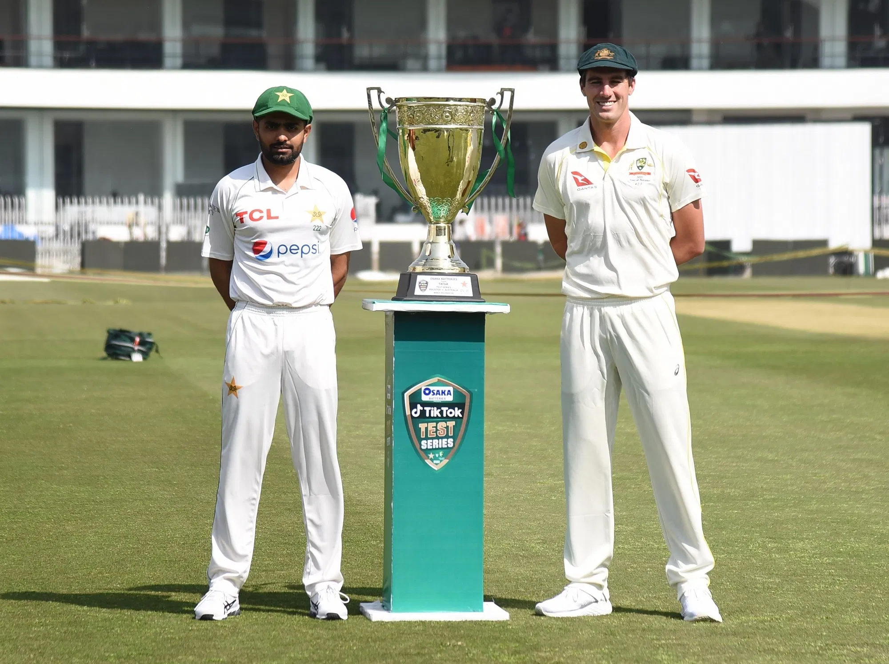
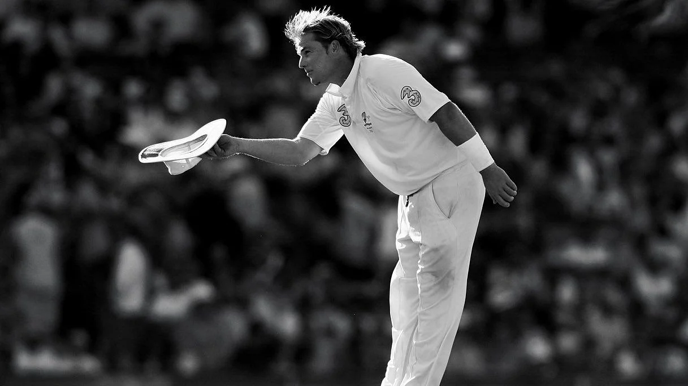
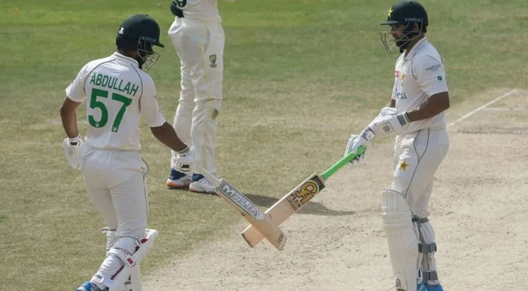
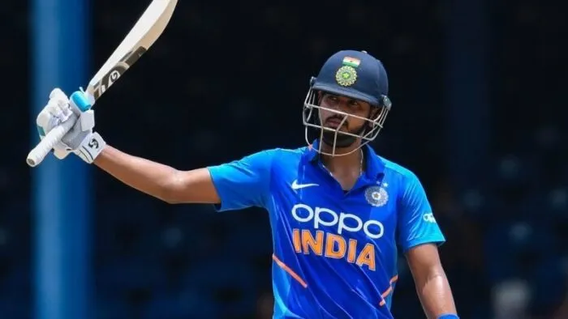
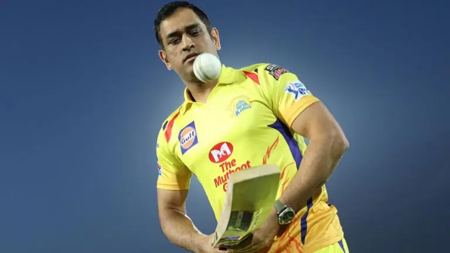

Over 48 hours has passed since the news that shook every cricket fan to their very core. The kind of news that you’d have to rub your eyes to make sure you are actually reading what you are reading. The kind you’d wish was a terrible dream that you’d wake up from in relief. Or, as Fox Cricket’s Mark Howard put it, where he would just appear and say it was all a joke. Shane Warne, one of the greatest ever to grace the beautiful game of cricket, has died at age 52. That sentence will take a while to adjust to. It just hasn’t sunk in. Only hours before his fatal heart attack in Thailand, Warne paid tribute to another Australian cricketing legend who had passed away just a day earlier; the great Rod Marsh. It is a reminder of how short and fragile life is.
Today's Match Prediction

PAKISTAN VS AUSTRALIA 1ST TEST
2 minutesPAKISTAN VS AUSTRALIA 1ST TEST
2 minutesPAKISTAN VS AUSTRALIA 1ST TEST
2 minutes

Admin
January 14, 2019
2 Commets
Thank you, Warney: My tribute to Shane Warne, the King of Spin

Admin
January 16, 2019
7 Commets
Fewest wickets to fall in Test history: Stats from bore draw in Rawalpindi
Had the first Test between Pakistan and Australia matched the hype before the series, we may have witnessed one of the great Test matches. Instead, it was one to forget, with Australia’s first Test in the country since 1998 ending in the borest of bore draws. Just 14 wickets fell across the five days in a total of 379.1 overs. What’s worse is most of the dismissals were due to batting errors rather than from brilliance from the bowler or assistance from the pitch. The batsmen feasted, scoring a total of 1,187 runs on a pitch that surely must face scrutiny from the ICC. Test cricket deserves better than this Rawalpindi wicket. There was almost no sideways movement or any uneven bounce as the Test went on, with the surface too slow for the bowlers to make an impact. The ball going past the bat was as rare as an ecclipse; an event worthy of bringing all your family and friends around the TV or smart device to watch the replay of such a momentous occasion.

Admin
January 19, 2019
5 Commets
IND vs SL 1st T20 Dream11 Prediction & Fan2Play Possible 11 Pitch Report
The cricket world continues to rotate at a rapid rate, with India and Sri Lanka going head-to-head less than a week after their last assignments. Sri Lanka were in Australia merely four days ago, where they picked up a morale-boosting, consolation victory in the final T20I. They displayed positive signs right throughout the five-match series, which they will be aiming to build on in this three-match assignment. However, Wanindu Hasaranga could be out of the entire series due to COVID-19, and Kusal Mendis and Maheesh Theekshana have been reportedly struck down by injuries. Combine those absentees with the fact that Sri Lanka are winless in their last seven completed T20Is in India, and it is an even tougher ask. India are without stars of their own, but their depth continues to shine through. Also, the fact they won matches against the West Indies when batting first is cause for encouragement, as this was an area they struggled in badly in last year’s World Cup.

Admin
January 21, 2019
12 Commets
CSK IPL Mega Auction Analysis: Champions to go back-to-back?
The IPL 2022 Mega Auction is behind us, and all 10 teams have picked a squad ahead of the new season. This auction was special as this time there were 10 teams instead of eight, with Gujarat Titans and Lucknow Super Giants being the two new sides. Fans and pundits were quite keen to see how the four-time winners and defending champions Chennai Super Kings approached the auction. Dhoni and CSK are known for thinking out of the box or doing something that defies cricketing logic. Indeed, it has proved to be very fruitful for the franchise. They did the same to an extent in this auction as well. CSK picked the likes of Ambati Rayudu, Robin Uthappa and Dwayne Bravo who will form the core of the team at least for this year’s IPL alongside MS Dhoni, Ravindra Jadeja, Ruturaj Gaikwad and Moeen Ali. This was a little surprising as all the other sides tried to go for young players, but CSK decided to stick with their tried and tested “Dad’s Army”.